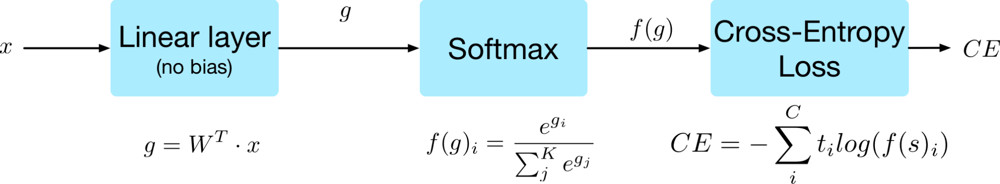
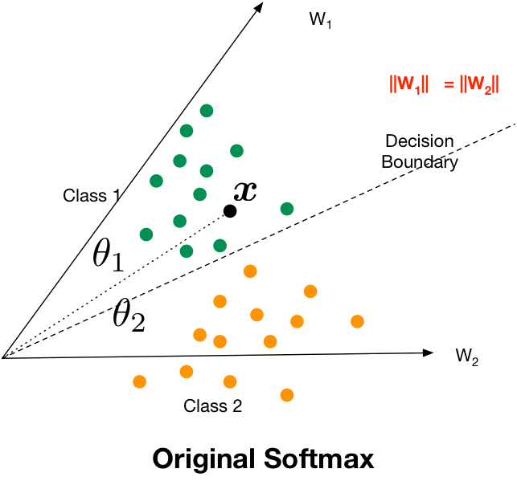
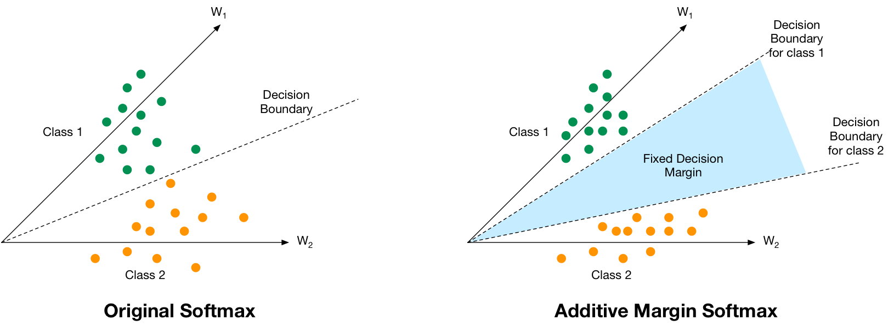
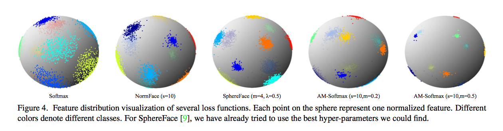
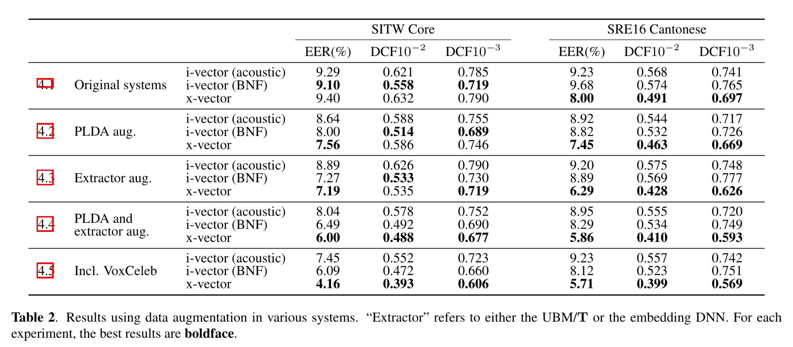

Softmax, géométrie hypersphérique, AAM-Softmax et augmentations
2026-02-11
À la fin de la séance, vous devez pouvoir :
Aujourd’hui, la question est :
\[ \boxed{\text{qu'est-ce qui force }x\text{ à porter l'identité du locuteur ?}} \]
Dans un x-vector ou un ECAPA, où apparaît explicitement le nom du locuteur pendant l’apprentissage ?
Dans la fonction de coût : pendant l’apprentissage, chaque utterance est associé à une classe locuteur. L’extracteur est optimisé pour rendre cette classification possible.
Pendant l’apprentissage, on connaît un ensemble de locuteurs :
\[ \mathcal S_{\mathrm{train}}=\{1,\dots,K\}. \]
On entraîne donc un classifieur \(K\)-classes. Pourtant, au test, les locuteurs peuvent être absents de \(\mathcal S_{\mathrm{train}}\).
\[ \boxed{\text{closed-set training}\quad\longrightarrow\quad\text{open-set verification}} \]
Le classifieur est un outil d’apprentissage : sa dernière couche sera jetée. Ce que l’on veut conserver est la géométrie de l’espace d’embeddings.
Classifieur d’apprentissage
\[ x\mapsto (g_1,\dots,g_K) \]
Il n’est généralement pas utilisé pour la vérification finale.
Embedding
\[ x=f_\theta(u) \]
C’est lui qui sera comparé par cosinus ou PLDA.
La couche de classification associe à chaque locuteur \(k\) un vecteur de poids \(w_k\).
Pendant l’apprentissage, on pousse l’embedding \(x\) à produire un logit élevé pour son locuteur \(y\) :
\[ w_y^\top x+b_y \quad \text{grand}. \]
Les poids \(w_k\) vont progressivement jouer le rôle de directions/prototypes de classes.
On partira de
\[ g_k=w_k^\top x+b_k \]
puis on retirera les degrés de liberté qui nous gênent :
\[ \text{biais}\;\to\;0, \qquad \|w_k\|\to1, \qquad \|x\|\to1, \]
pour arriver à
\[ \boxed{g_k=s\cos\theta_k.} \]
Pour un utterance \(u\), l’extracteur donne un embedding
\[ \boxed{x=f_\theta(u)\in\mathbb R^d}. \]
La dernière couche d’apprentissage est linéaire et produit les logits
\[ \boxed{g=W^\top x+b}, \]
avec \(W=[w_1,\ldots,w_K]\in\mathbb R^{d\times K}\).
Pour la classe \(k\) :
\[ \boxed{g_k=w_k^\top x+b_k.} \]
Le logit \(g_k\) est un score non normalisé de classification.
Il ne s’agit pas encore d’une probabilité.
À partir des logits \(g_1,\ldots,g_K\) :
\[ p_k=P(y=k\mid x)=\frac{e^{g_k}}{\sum_{j=1}^{K}e^{g_j}}. \]
Le softmax transforme les logits en nombres positifs de somme \(1\), mais ne change pas la classe gagnante :
\[ \arg\max_k p_k=\arg\max_k g_k. \]
Ajouter la même constante à tous les logits ne change pas non plus les probabilités.
Pour un exemple de classe vraie \(y\) :
\[ \boxed{ \mathcal L_{\mathrm{CE}} =-\log p_y } \]
soit
\[ \mathcal L_{\mathrm{CE}} =-g_y+\log\sum_{j=1}^K e^{g_j}. \]
Pour la classe vraie \(y\) :
\[ \mathcal L_{\mathrm{CE}} =-\log \frac{e^{g_y}} {e^{g_y}+\sum_{j\neq y}e^{g_j}}. \]
Pour diminuer cette loss, il faut rendre le logit de la classe vraie plus grand relativement aux logits concurrents.
Autrement dit, pour chaque concurrent \(j\neq y\), on cherche à augmenter la marge de logit
\[ \boxed{g_y-g_j}. \]
Ce n’est pas une consigne indépendante « monter \(g_y\) et descendre chaque \(g_j\) » : c’est l’écart relatif entre la classe vraie et les autres classes qui compte dans le softmax.
On introduit d’abord la cible one-hot \(t=(t_1,\ldots,t_K)\) :
\[ t_k = \mathbf 1[k=y] = \begin{cases} 1 & \text{si } k=y,\\ 0 & \text{sinon}. \end{cases} \]
La dérivée de la cross-entropy par rapport au logit \(g_k\) vaut alors :
\[ \boxed{ \frac{\partial\mathcal L_{\mathrm{CE}}}{\partial g_k} =p_k-t_k } \]
Donc :
Comme \(g=W^\top x+b\) :
\[ \boxed{ \nabla_x\mathcal L_{\mathrm{CE}} = W(p-t) } \]
où \(t\) est le vecteur one-hot défini à la slide précédente.
L’embedding est donc attiré vers \(w_y\) et repoussé par une combinaison des autres \(w_j\).
Deux utterances du même locuteur sont-elles directement comparées dans \(\mathcal L_{\mathrm{CE}}\) ?
Non. Chaque embedding \(x\) est comparé aux poids de classification \(w_1,\ldots,w_K\).
La compacité intra-locuteur apparaît donc indirectement, parce que tous les utterances d’un même locuteur doivent être bien classés par le même poids \(w_y\).

Notations utilisées dans la suite : \(x\) = embedding, \(g=W^\top x+b\) = logits, \(p=f(g)=\operatorname{softmax}(g)\) = probabilités, \(t\) = cible one-hot et \(\mathcal L_{\mathrm{CE}}\) = cross-entropy.
Pour chaque classe \(k\), \(t_k=1\) uniquement si \(k\) est la classe vraie (\(k=y\)), et \(t_k=0\) sinon.
La figure omet le biais (\(b=0\)) ; nous allons justement expliquer ensuite pourquoi on le supprime dans les losses angulaires.
La colonne \(w_k\) de la dernière couche est un vecteur appris associé à la classe d’entraînement \(k\).
Ce n’est pas, en général, la moyenne des embeddings du locuteur \(k\).
On peut décomposer le produit scalaire :
\[ \boxed{ w_k^\top x = \|w_k\|_2\,\|x\|_2\cos\theta_k } \]
où \(\theta_k=\angle(x,w_k)\).
Après normalisation, seule la direction de \(w_k\) compte. On l’utilisera alors comme une direction de référence de classe, souvent appelée « prototype de classe » dans ce contexte.
On repart de la décomposition
\[ \boxed{ g_y = w_y^\top x+b_y = \|w_y\|_2\,\|x\|_2\cos\theta_y+b_y. } \]
Le réseau peut donc augmenter \(g_y\) de plusieurs façons :
Or, à l’inférence, un backend cosinus ne conservera que l’information angulaire. C’est pourquoi nous allons progressivement supprimer les autres degrés de liberté.
Le logit s’écrit
\[ g_k=\|w_k\|\,\|x\|\cos\theta_k+b_k. \]
Ils ne sont pas « mauvais » en soi : ils sont surtout mal alignés avec un score cosinus utilisé ensuite en vérification.
On va donc les retirer afin que l’objectif d’apprentissage dépende de la même géométrie que le score cosinus utilisé au test.
Pendant l’apprentissage fermé, une prédiction correcte exige seulement
\[ \boxed{g_y>g_j\qquad\forall j\neq y.} \]
Cela indique que \(x\) est bien classé par la tête \(W,b\) apprise sur les speakers du train.
Mais à l’inférence, cette tête disparaît. On compare directement deux embeddings :
\[ \boxed{s(x_e,x_t)=\cos(x_e,x_t)} \]
pour des locuteurs qui peuvent n’avoir jamais été vus pendant l’entraînement.
Une excellente accuracy sur les classes du train ne garantit donc pas, à elle seule, une bonne séparation target / non-target sur de nouveaux locuteurs. La validation doit utiliser des speakers distincts de ceux du train.
Sans normalisation :
\[ g_k=\|w_k\|\,\|x\|\cos\theta_k+b_k. \]
La norme peut rendre le softmax plus confiant sans améliorer l’angle.
Pour la vérification cosinus, c’est un décalage entre objectif d’apprentissage et objectif final.
On retire progressivement les degrés de liberté inutiles :
\[ b_k=0, \qquad \|w_k\|_2=1, \qquad \hat x=\frac{x}{\|x\|_2}. \]
Alors
\[ \boxed{w_k^\top\hat x=\cos\theta_k.} \]
La décision dépend désormais uniquement de l’angle avec les directions de référence des classes.
Attention : cette normalisation borne les logits dans \([-1,1]\). Nous réintroduirons un facteur d’échelle \(s\) un peu plus loin pour contrôler la dynamique du softmax sans modifier la géométrie angulaire.
La décision entre deux classes devient :
\[ \cos\theta_1 \underset{2}{\overset{1}{\gtrless}} \cos\theta_2. \]
Sur \([0,\pi]\), le cosinus est décroissant :
\[ \theta_1 \underset{1}{\overset{2}{\gtrless}} \theta_2. \]
On choisit donc la direction de prototype la plus proche.
Après normalisation :
\[ x\in\mathbb S^{d-1} = \{u\in\mathbb R^d:\|u\|_2=1\}. \]
En dimension \(d=3\), c’est une sphère ordinaire.
En dimension \(d=192\) ou \(256\), c’est une hypersphère.
Pour \(\|x_i\|=\|x_j\|=1\) :
\[ \begin{aligned} \|x_i-x_j\|_2^2 &=\|x_i\|^2+\|x_j\|^2-2x_i^\top x_j\\ &=2-2\cos\theta_{ij}. \end{aligned} \]
Sur l’hypersphère, minimiser la distance euclidienne entre deux embeddings est-il équivalent à maximiser leur similarité cosinus ?
Oui. Pour deux embeddings normalisés,
\[ \|x_i-x_j\|_2^2=2-2\cos\theta_{ij}. \]
Les deux critères donnent donc exactement le même ordre des paires tant que les normes sont fixées à \(1\).
Après normalisation, chaque poids \(w_k\) est une direction de référence apprise pour le locuteur d’entraînement \(k\) :
\[ w_k\in\mathbb S^{d-1}. \]
Dans la littérature, on parle souvent de prototype de classe. Ici, ce mot désigne donc \(w_k\) ; il ne signifie pas nécessairement « moyenne des embeddings ».
Pour bien classer un exemple target \(y\) :
\[ \theta_y<\theta_j\qquad\forall j\neq y. \]
À deux classes, la frontière vérifie
\[ \theta_1=\theta_2, \]
c’est-à-dire la bissectrice angulaire des deux prototypes.

Deux objectifs complémentaires :
Compacité intra-speaker
\[ \theta(x_{k,j},w_k)\text{ petit}. \]
Séparation inter-speaker
\[ \theta(w_k,w_\ell)\text{ grand},\qquad k\neq\ell. \]
Avec beaucoup de locuteurs, cela devient un problème de packing sphérique : la place angulaire disponible est limitée.
Après normalisation pure :
\[ g_k=\cos\theta_k\in[-1,1]. \]
Même dans un cas idéal \(\cos\theta_y=1\) et \(\cos\theta_j=-1\), on obtient
\[ p_y=\frac{e^2}{e^2+K-1}. \]
Pour \(K=1000\) :
\[ p_y\approx0.0073. \]
La géométrie peut être parfaite tout en donnant un softmax très peu confiant.
On définit :
\[ \boxed{g_k=s\cos\theta_k} \]
avec \(s>0\).
Le scale ne change pas l’ordre des classes :
\[ \arg\max_k s\cos\theta_k=\arg\max_k\cos\theta_k. \]
Le softmax devient
\[ p_k=\frac{e^{s\cos\theta_k}}{\sum_j e^{s\cos\theta_j}}. \]
Dans le cas idéal :
\[ p_{\max}(s)=\frac{e^{2s}}{e^{2s}+K-1}. \]
Quand \(s\) augmente, les probabilités deviennent plus pointues, mais l’ordre angulaire des classes ne change pas.
Normalisation
Fixe la géométrie :
\[ \|x\|=\|w_k\|=1. \]
Scale \(s\)
Fixe l’amplitude des logits :
\[ g_k=s\cos\theta_k. \]
La loss devient :
\[ \boxed{ \mathcal L_{\mathrm{CE}} =-\log \frac{e^{s\cos\theta_y}} {e^{s\cos\theta_y}+\sum_{j\neq y}e^{s\cos\theta_j}} } \]
Nous avons maintenant une classification entièrement angulaire.
Avec le softmax normalisé, il suffit encore d’être du bon côté de la frontière :
\[ \theta_y<\theta_j. \]
Un embedding peut être très proche de cette frontière. Pour la vérification open-set, on veut une zone de sécurité supplémentaire :
\[ \boxed{\theta_y+\text{marge}<\theta_j.} \]

On rencontre deux variantes proches mais distinctes :
\[ \text{AM : }\cos\theta_y-m_c \qquad\text{vs}\qquad \text{AAM : }\cos(\theta_y+m_a). \]
AAM n’est donc pas « AM puis une deuxième marge angulaire » : c’est une autre façon d’introduire la marge, directement dans l’angle.
AM-Softmax remplace, pour la classe vraie :
\[ \cos\theta_y \longrightarrow \cos\theta_y-m. \]
Le logit target devient
\[ \boxed{g_y=s(\cos\theta_y-m).} \]
Pour battre un concurrent \(j\) :
\[ \cos\theta_y-m>\cos\theta_j. \]
soit
\[ \cos\theta_y>\cos\theta_j+m. \]
La classe vraie doit donc disposer d’un avantage explicite dans l’espace des cosinus.
La pénalité \(m\) est constante dans l’espace des cosinus, mais la relation
\[ \cos\theta \]
est non linéaire. Une même différence de cosinus ne correspond donc pas à une même différence angulaire suivant la valeur de \(\theta\).
AAM signifie Additive Angular Margin.
On part toujours du softmax normalisé
\[ g_y=s\cos\theta_y, \]
mais, uniquement pour la classe vraie pendant l’entraînement, on ajoute la marge dans l’angle :
\[ \theta_y\longrightarrow\theta_y+m_a. \]
Le logit target devient alors
\[ \boxed{g_y^{\mathrm{AAM}}=s\cos(\theta_y+m_a).} \]
Ce n’est pas l’AM-Softmax auquel on ajouterait encore quelque chose : AM et AAM sont deux variantes différentes.
Pour battre un concurrent \(j\) :
\[ \cos(\theta_y+m)>\cos\theta_j. \]
Dans le domaine usuel où le cosinus est décroissant :
\[ \boxed{\theta_y+m<\theta_j.} \]
La condition
\[ \theta_y+m<\theta_j \]
signifie que l’exemple doit être au moins \(m\) radians plus proche de son prototype que du concurrent.
Par exemple :
\[ m=0.2\,\mathrm{rad}\approx11.5^\circ. \]
On peut développer :
\[ \cos(\theta_y+m) = \cos\theta_y\cos m - \sin\theta_y\sin m. \]
C’est cette quantité qui remplace le logit target normalisé.
| Loss | Logit target |
|---|---|
| normalized softmax | \(s\cos\theta_y\) |
| AM-Softmax | \(s(\cos\theta_y-m_c)\) |
| AAM-Softmax | \(s\cos(\theta_y+m_a)\) |
Pour une petite marge angulaire,
\[ \cos(\theta_y+m_a)\approx\cos\theta_y-m_a\sin\theta_y, \]
ce qui montre que la pénalité AAM dépend de l’angle courant.

Dans cette figure, chaque point est un embedding normalisé et chaque couleur correspond à une classe.
Avec nos notations, l’idée à regarder est donc la compacité intra-classe et la séparation angulaire inter-classe. Cette figure vient du papier AM-Softmax ; elle n’illustre pas directement la formule AAM \(\cos(\theta_y+m_a)\) vue juste après.
Trois quantités :
\[ \theta_y, \qquad \theta_j, \qquad \theta_y+m. \]
La classification target avec AAM exige :
\[ \theta_y+m<\theta_j. \]
Pendant l’apprentissage, le label \(y\) est connu : on modifie uniquement le logit target \(g_y\).
À l’inférence, il n’y a plus de classe vraie parmi les \(K\) speakers d’apprentissage :
\[ \boxed{\text{on ne calcule pas }\cos(\theta+m)\text{ entre enrollment et test}.} \]
On extrait les embeddings et on utilise le backend choisi : cosinus ou PLDA.
Après entraînement :
\[ \boxed{W\text{ est jetée}} \]
et on conserve :
\[ \boxed{f_\theta(u).} \]
Le but de \(W\) était de sculpter l’espace d’embeddings.
AAM cherche simultanément à :
L’objectif est d’apprendre une règle générale :
\[ \text{même identité}\Rightarrow\text{directions proches}, \]
\[ \text{identités différentes}\Rightarrow\text{directions séparées}. \]
AAM n’apprend évidemment aucun poids de classe pour les locuteurs qui seront rencontrés plus tard au test.
Elle apprend en revanche une fonction commune \(f_\theta\) en répétant la même contrainte géométrique sur un grand nombre de locuteurs d’entraînement :
\[ \text{utterances d'un même speaker}\to\text{directions proches}, \]
\[ \text{speakers différents}\to\text{directions séparées}. \]
C’est cette règle apprise par l’extracteur qui doit se transférer aux locuteurs non vus.
Pour généraliser, il faut :
Une seule session par speaker permettrait beaucoup plus facilement de mémoriser des détails accidentels.
Si \(m\approx0\), AAM se rapproche du softmax normalisé.
Si \(m\) est trop grand, la condition
\[ \theta_y+m<\theta_j \]
peut devenir trop difficile, surtout au début de l’apprentissage.
\(m\) contrôle donc la sévérité géométrique de la tâche.
Si \(s\) est trop petit, les probabilités restent plates et les gradients peu discriminants.
Si \(s\) est très grand, le softmax devient extrêmement pointu et les exemples difficiles peuvent recevoir de forts gradients.
\(s\) contrôle surtout la dynamique d’optimisation ; \(m\) contrôle surtout la marge géométrique.
On peut entraîner avec AAM un TDNN, un ResNet, un ECAPA-TDNN ou un autre extracteur.
Dans une recette ECAPA typique :
\[ u\to\text{ECAPA}\to x\to\text{normalisation}\to\text{AAM classifier}. \]
Architecture et loss sont deux leviers complémentaires.
Les sorties softmax de la tête AAM sont utiles pour l’objectif d’entraînement.
Il ne faut pas les interpréter comme les probabilités finales de l’hypothèse target/non-target de la vérification.
Ce sont deux problèmes différents.
AAM façonne bien une géométrie utile, mais la comparaison utilisée dans la loss reste
\[ \boxed{x_i\longleftrightarrow w_k} \]
où \(w_k\) est un poids appris pour une classe du train.
La tâche finale, elle, compare directement deux observations :
\[ \boxed{x_e\longleftrightarrow x_t} \qquad\longrightarrow\qquad \text{même locuteur ou non ?} \]
La question devient donc plus précise :
Peut-on construire une loss où les comparaisons entre utterances / embeddings apparaissent directement pendant l’entraînement, plutôt que seulement via les poids \(w_k\) ?
| Famille | Ce que la loss compare | D’où vient la référence de classe ? | Exemple |
|---|---|---|---|
| Classification à marge | un embedding \(x_i\) aux poids \(w_1,\ldots,w_K\) | \(w_k\) est un paramètre global appris pour le speaker \(k\) du train | AAM-Softmax |
| Metric / episodic learning | des embeddings entre eux, ou une query à un centroïde construit dans le batch | la référence est calculée à partir d’utterances du batch | triplet, GE2E, angular prototypical |
Donc les deux familles peuvent produire une géométrie similaire, mais le signal d’apprentissage n’est pas construit de la même façon.
\[ \text{objectif commun : faible intra-speaker + forte séparation inter-speaker.} \]
On construit un triplet à partir de trois utterances :
L’anchor n’est pas un type particulier d’embedding : c’est simplement le rôle joué par un exemple dans le triplet courant.
On veut imposer :
\[ d(x_a,x_p)+m < d(x_a,x_n). \]
La loss classique est :
\[ \boxed{ \mathcal L_{\mathrm{triplet}} =\left[d(x_a,x_p)-d(x_a,x_n)+m\right]_+. } \]
<label>
Distance anchor–positive : <strong><span data-value="dap">0.30</span></strong>
<input data-input="dap" type="range" min="0.05" max="1.20" step="0.05" value="0.30">
</label>
<label>
Distance anchor–negative : <strong><span data-value="dan">0.55</span></strong>
<input data-input="dan" type="range" min="0.05" max="1.20" step="0.05" value="0.55">
</label>
<label>
Marge $m$ : <strong><span data-value="margin">0.20</span></strong>
<input data-input="margin" type="range" min="0.00" max="0.60" step="0.05" value="0.20">
</label><div class="triplet-name">positive $p$</div>
<div class="triplet-track">
<div class="triplet-anchor">A</div>
<div class="triplet-point triplet-positive" data-point="p">P</div>
</div><div class="triplet-name">negative $n$</div>
<div class="triplet-track">
<div class="triplet-anchor">A</div>
<div class="triplet-point triplet-negative" data-point="n">N</div>
</div>$\mathcal L=\max(d(a,p)-d(a,n)+m,0)$Faites varier les distances. Si le negative est suffisamment plus loin que le positive, la loss devient nulle.
Ici, sampling ne signifie pas « fréquence d’échantillonnage audio ».
Il désigne la façon dont on construit les exemples d’apprentissage : quels speakers entrent dans le mini-batch, quelles utterances jouent les rôles d’anchor / positive / negative, et quels négatifs sont effectivement utilisés dans la loss.
Si le négatif sélectionné est déjà très loin :
\[ d(x_a,x_n)\gg d(x_a,x_p)+m \]
alors
\[ \mathcal L_{\mathrm{triplet}}=0. \]
L’exemple n’apporte presque plus de gradient.
D’où le hard-negative mining : chercher des imposteurs proches de l’anchor.
La loss ne suffit donc pas à définir l’apprentissage : la construction du mini-batch et le choix des négatifs sont aussi essentiels.
Prenons un mini-batch très petit :
\[ 3\ \text{locuteurs}\times 3\ \text{utterances}. \]
| Locuteur A | Locuteur B | Locuteur C |
|---|---|---|
| \(a_1\) | \(b_1\) | \(c_1\) |
| \(a_2\) | \(b_2\) | \(c_2\) |
| \(a_3\) | \(b_3\) | \(c_3\) |
Pendant l’entraînement, les identités A, B et C sont connues.
Choisissons provisoirement \(a_1\) comme utterance à tester.
GE2E transforme alors le reste du mini-batch en une petite situation enrollment / test.
Pour le bon locuteur A, on construit un enrollment avec les autres utterances de A :
\[ \boxed{ c_A^{(-1)}=\frac{a_2+a_3}{2} } \]
Pour les deux autres locuteurs :
\[ c_B=\frac{b_1+b_2+b_3}{3}, \qquad c_C=\frac{c_1+c_2+c_3}{3}. \]
Puis \(a_1\) est comparé aux trois représentations :
\[ \begin{array}{ccc} a_1\leftrightarrow c_A^{(-1)} & a_1\leftrightarrow c_B & a_1\leftrightarrow c_C. \end{array} \]
La loss veut simplement que la similarité avec \(c_A^{(-1)}\) soit la plus grande.
\(a_1\) n’est pas une query spéciale.
On recommence successivement avec :
\[ a_1,\ a_2,\ a_3,\ b_1,\ b_2,\ b_3,\ c_1,\ c_2,\ c_3. \]
Pour chaque embedding :
Ainsi, avec \(N\) speakers et \(M\) utterances par speaker, GE2E exploite les \(NM\) embeddings comme queries.
GE2E = beaucoup de petits tests enrollment/test simultanés dans un même mini-batch.
Le mini-batch contient
\[ N\ \text{locuteurs}\times M\ \text{utterances par locuteur}. \]
Pour un embedding \(x_{j,i}\) du locuteur \(j\), son centroïde positif leave-one-out est
\[ \boxed{ c_j^{(-i)} = \frac{1}{M-1} \sum_{m\neq i}x_{j,m}. } \]
Pour un autre locuteur \(k\neq j\) :
\[ c_k=\frac1M\sum_{m=1}^{M}x_{k,m}. \]
Les scores sont
\[ S_{j,i,k} = \begin{cases} w\cos(x_{j,i},c_j^{(-i)})+b, & k=j,\\[1mm] w\cos(x_{j,i},c_k)+b, & k\neq j. \end{cases} \]
Si on comparait \(a_1\) à
\[ c_A=\frac{a_1+a_2+a_3}{3}, \]
\(a_1\) contribuerait lui-même à la représentation à laquelle on le compare.
On utilise donc :
\[ c_A^{(-1)}=\frac{a_2+a_3}{2}. \]
Plus généralement :
\[ c_j^{(-i)} = \frac{1}{M-1} \sum_{m\neq i}x_{j,m}. \]
Cela évite une comparaison en partie triviale et reproduit mieux :
\[ \boxed{ \text{enrollment indépendant} \quad\leftrightarrow\quad \text{utterance de test}. } \]
Reprenons exactement le même mini-batch.
Pour chaque speaker, on réserve par exemple la dernière utterance comme query :
\[ q_A=a_3,\qquad q_B=b_3,\qquad q_C=c_3. \]
Les autres utterances constituent le support :
\[ c_A=\frac{a_1+a_2}{2}, \qquad c_B=\frac{b_1+b_2}{2}, \qquad c_C=\frac{c_1+c_2}{2}. \]
Puis chaque query est comparée aux trois prototypes :
\[ q_A \longleftrightarrow \{c_A,c_B,c_C\}. \]
La cross-entropy demande que \(q_A\) choisisse \(c_A\), \(q_B\) choisisse \(c_B\), etc.
| GE2E | Angular prototypical | |
|---|---|---|
| Queries | tous les embeddings du batch, chacun à son tour | une ou plusieurs utterances explicitement réservées comme queries |
| Référence positive | centroïde leave-one-out pour la query courante | prototype calculé sur le support |
| Négatifs | tous les autres centroïdes du batch | tous les autres prototypes du batch |
| Idée | maximiser l’usage du batch | reproduire explicitement un épisode support/query |
Les deux méthodes apprennent donc essentiellement :
\[ \boxed{ \text{query proche du centroïde de son speaker} \quad\text{et loin des autres}. } \]
La différence principale est la manière d’organiser le mini-batch et de définir les rôles des utterances.
\[ x_i\longleftrightarrow w_k \]
\[ q_i\longleftrightarrow c_k \]
Il n’y a pas de réponse universelle.
Classification à marge :
Metric learning / prototypical :
La question importante n’est pas « quelle loss faut-il mémoriser ? », mais quelle contrainte géométrique et quel sampling impose-t-elle ?
Une recette efficace consiste à ne pas utiliser la marge la plus agressive dès le début.
Après un premier entraînement, on effectue une courte seconde phase avec :
Schématiquement :
\[ \text{training standard} \longrightarrow \boxed{m\uparrow,\ \text{durée}\uparrow} \longrightarrow \text{fine-tuning}. \]
Cette stratégie a notamment été utilisée avec ECAPA-TDNN pour améliorer la robustesse des embeddings.
La littérature contient de nombreuses extensions :
On ne les détaillera pas ici.
L’idée commune reste de contrôler où se placent les embeddings et quelles comparaisons produisent le gradient.
Pour apprendre un bon speaker embedding, on agit sur quatre objets distincts :
\[ \boxed{\text{architecture}} \qquad \boxed{\text{loss}} \qquad \boxed{\text{sampling}} \qquad \boxed{\text{augmentation}} \]
La loss dit comment organiser l’espace d’embeddings.
Les augmentations disent quelles transformations acoustiques doivent préserver l’identité.
\[ \boxed{\text{loss}+\text{augmentations}=\text{géométrie}+\text{invariances}} \]
À partir d’un signal \(u\), on construit
\[ \tilde u=T(u) \]
avec l’hypothèse fondamentale
\[ \boxed{y(\tilde u)=y(u).} \]
La transformation doit modifier une nuisance acoustique sans modifier l’identité du locuteur.
Les augmentations speaker-preserving historiques agissent directement sur le signal \(u\) :
Par exemple, pour la réverbération :
\[ \tilde u=h*u. \]
Ici on conserve le même label \(y\), car on cherche à modifier la condition acoustique sans modifier le locuteur.
Lorsque le réseau reçoit des log-Mel/filterbanks \(X\in\mathbb R^{F\times T}\), on peut masquer aléatoirement :
\[ \boxed{\text{des bandes de fréquences}} \qquad\text{et}\qquad \boxed{\text{des intervalles temporels}}. \]
C’est SpecAugment : une augmentation appliquée directement à la représentation temps-fréquence, introduite initialement pour l’ASR puis étudiée pour les speaker embeddings avec TDNN/ResNet et Softmax/AAM-Softmax. Elle agit sur les features, contrairement au bruit ou à la réverbération qui agissent sur le waveform.
Intuition : empêcher l’extracteur de dépendre excessivement d’une petite région fréquentielle ou temporelle.
Même label \(y\) : bruit, RIR, babble, musique, codec, SpecAugment.
\[ y(\tilde u)=y(u). \]
La speed perturbation ou la VTLP peuvent au contraire être utilisées pour modifier volontairement des traits vocaux et créer de nouvelles identités d’entraînement.
VTLP = Vocal Tract Length Perturbation : on déforme l’axe fréquentiel du spectre afin de déplacer notamment les positions formantiques, comme si la longueur du conduit vocal était différente. Cette transformation peut donc modifier des indices liés à l’identité vocale.
Dans une recette de speaker augmentation, les versions suffisamment perturbées peuvent recevoir de nouveaux labels speaker plutôt que le label original.
Donc : toute transformation audio ne doit pas automatiquement garder le même label. Cela dépend de ce que l’on veut rendre invariant.
Dans le papier x-vector de Snyder et al., l’augmentation combine notamment :
Pendant l’entraînement :
\[ (u,y),\qquad(\tilde u,y) \]
doivent tous deux produire un logit élevé pour la même classe \(y\).
On espère alors apprendre, au moins au sens du score final :
\[ \boxed{f_\theta(u)\approx f_\theta(\tilde u).} \]
Cette proximité n’est pas imposée par un terme pairwise explicite : elle émerge du label partagé.
On entraîne directement l’extracteur avec les audios augmentés :
\[ \{u,\tilde u\} \longrightarrow \boxed{f_\theta\text{ entraîné}} \longrightarrow \{x,\tilde x\}. \]
L’objectif est que la nuisance déplace moins l’embedding :
\[ \operatorname{angle}(f_\theta(u),f_\theta(T(u)))\downarrow. \]
« PLDA augmentation » ne fusionne pas PLDA et x-vector.
Le système reste :
\[ \text{audio}\to\text{x-vector}\to\text{PLDA score}. \]
On calcule avec le même extracteur fixe :
\[ x=f_\theta(u),\qquad\tilde x=f_\theta(\tilde u). \]
On entraîne PLDA avec
\[ (x,y),\qquad(\tilde x,y) \]
comme deux observations du même locuteur.
Dans le modèle
\[ x_{k,j}=\mu+\eta_k+\varepsilon_{k,j}, \]
clean et réverbéré partagent \(\eta_k\) mais enrichissent la variabilité intra-speaker observée, donc notamment l’estimation de \(\Phi_w\).
Il n’y a ni concaténation ni somme des embeddings.
Extractor aug.
« Essaie de rendre l’embedding lui-même invariant. »
\[ f_\theta(u)\approx f_\theta(\tilde u) \]
PLDA aug.
« Ces déplacements d’embedding sont compatibles avec le même locuteur. »
\[ \Phi_w\text{ apprend cette variabilité.} \]
On peut faire :
\[ \boxed{\text{extractor augmentation}} \]
puis utiliser les embeddings clean + augmentés pour :
\[ \boxed{\text{PLDA augmentation}}. \]
Le réseau réduit la nuisance et PLDA modélise la nuisance résiduelle.

Original systems : extracteur original + PLDA original.
PLDA aug. : l’extracteur est inchangé ; on produit plus d’embeddings clean/augmentés et on réestime PLDA :
\[ f_\theta\text{ fixe},\qquad\text{PLDA entraîné sur davantage de conditions}. \]
Extractor aug. : \(f_\theta\) est entraîné sur les audios augmentés ; la robustesse est poussée dans l’embedding.
PLDA and extractor aug. : on combine les deux :
\[ \text{audio augmenté} \to f_\theta\text{ robuste} \to\text{embeddings} \to\text{PLDA enrichi}. \]
On ajoute également davantage de données de locuteurs réels provenant de VoxCeleb.
Le gain ne vient donc plus seulement des transformations artificielles :
\[ \text{plus de speakers / conditions réelles} + \text{augmentations}. \]
Le widget montre donc où la robustesse est apprise, pas une fusion des représentations.
Une transformation trop forte peut détruire l’information speaker ; une transformation irréaliste peut gaspiller de la capacité.
On cherche donc des nuisances cohérentes avec le test :
\[ P_{\mathrm{aug}}(u\mid y) \approx \text{variations pertinentes de }P_{\mathrm{test}}(u\mid y). \]
La robustesse ne concerne pas seulement le bruit :
Une durée très courte augmente néanmoins naturellement l’incertitude sur l’identité.
AAM demande :
\[ \text{clusters angulaires compacts et séparés}. \]
L’augmentation demande :
\[ \text{stabilité de ces clusters sous certaines nuisances}. \]
Il faut donc trouver un compromis entre invariance et information discriminante.
Une batch utile doit exposer :
Le réseau doit simultanément réduire l’intra-speaker et préserver l’inter-speaker.
La loss d’entraînement mesure la classification des speakers connus. Notre objectif final est la vérification sur des speakers inconnus.
Il faut donc :
\[ \mathcal S_{\mathrm{train}}\cap\mathcal S_{\mathrm{val}}=\varnothing \]
et suivre des métriques comme
\[ \boxed{\text{EER / DCF sur speakers non vus}.} \]
On conserve généralement la représentation avant la tête de classification :
\[ \text{encoder}\to\text{pooling}\to\boxed{x}\to\text{AAM head}. \]
À l’inférence avec un backend cosinus :
\[ \hat x=\frac{x}{\|x\|_2},\qquad s=\hat x_e^\top\hat x_t. \]
Avec plusieurs utterances d’enrôlement, on peut construire une représentation speaker à partir de plusieurs embeddings.
Dans le modèle simple du TD :
\[ x_\ell=\mu_s+\varepsilon_\ell, \]
si les erreurs de session sont indépendantes :
\[ \operatorname{Cov}(\bar x)=\frac{1}{L}\Sigma_w. \]
Plusieurs observations réduisent donc la variabilité aléatoire de session.
Si toutes les observations utilisent le même téléphone ou le même environnement, une partie de l’erreur est commune.
Le gain du multi-enrollment peut alors saturer.
C’est un des exercices du TD.
Pendant l’apprentissage :
\[ g_k=s\cos\theta_k \]
compare \(x\) aux prototypes des classes training.
Pendant la vérification :
\[ s(x_e,x_t) \]
compare deux observations de speakers potentiellement inconnus.
Si
\[ s_B=10s_A+7, \]
alors l’ordre des trials ne change pas.
Donc ROC et EER restent identiques.
Mais l’échelle et les seuils changent : cela prépare la distinction discrimination / calibration.
CM3 apprend surtout à produire un espace discriminant.
CM4 demandera :
\[ \boxed{\text{à quel seuil prendre une décision ?}} \]
avec priors, coûts, DCF, Bayes et calibration.
\[ \text{audio} \xrightarrow{\text{augmentation}} \tilde u \xrightarrow{f_\theta} \tilde x \xrightarrow{\text{AAM training}} \text{espace discriminant} \]
puis à l’inférence :
\[ x_e,x_t \xrightarrow{\text{cosine / PLDA}} s. \]
Un système robuste combine souvent ces trois niveaux.
La fonction de coût façonne l’espace d’embeddings.
Normaliser poids et embeddings donne un classifieur angulaire :
\[ g_k=s\cos\theta_k. \]
\[ \theta_y+m<\theta_j. \]
AAM n’est pas la seule possibilité : triplet, GE2E et prototypical losses imposent d’autres contraintes, plus directement liées aux comparaisons entre utterances.
En metric learning, le sampling du mini-batch fait partie intégrante de la méthode.
Extractor augmentation apprend à rendre \(f_\theta\) plus invariant, tandis que PLDA augmentation apprend au backend à mieux modéliser la variabilité résiduelle.
À l’inférence, la tête de classification disparaît : on conserve l’embedding et on compare de nouveaux speakers.
Pourquoi AAM + augmentation est-il un couple naturel ?
AAM dit où placer les embeddings sur l’hypersphère ; l’augmentation dit quelles variations acoustiques doivent conduire au même endroit.
Le TD ne recopiera pas les dérivations du CM. Il utilisera ces notions pour résoudre quatre problèmes plus ouverts :
\[ \boxed{ \text{speaker recognition moderne} = \text{architecture} + \text{loss et sampling} + \text{invariances apprises} + \text{backend} } \]
Le CM suivant s’intéressera au sens décisionnel du score.